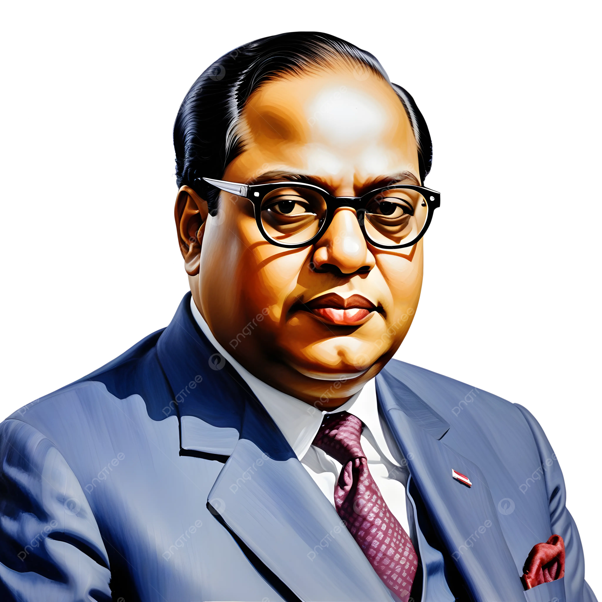

Tribute to Dr.BR Ambedkar

“I like the religion that teaches liberty, equality and fraternity”
--Dr.B R Ambedkar
About The Father of constitution of India
1. Ambavadekar to Ambedkar: Did you know that Dr. Ambedkar’s original surname was actually “Ambavadekar”? It was derived from the name of his native village, ‘Ambavade,’ in Ratnagiri district, Maharashtra. However, his teacher, Mahadev Ambedkar, affectionately changed his surname to ‘Ambedkar’ in school records. Quite a name transformation, right?
2. Economics Trailblazer: Dr. Ambedkar wasn’t just a legal luminary; he was also the first Indian to pursue a doctorate in economics abroad. He earned his Ph.D. in Economics from Columbia University, making him a trailblazer in the field. During his three years at Columbia, he took an impressive array of courses, including economics, history, sociology, philosophy, and more. Talk about academic dedication!
3. Reserve Bank of India (RBI): Ever wondered about the origins of the Reserve Bank of India (RBI)? Well, Dr. Ambedkar played a pivotal role in its establishment. He presented guidelines for the RBI to the Hilton Young Commission (also known as the Royal Commission on Indian Currency and Finance) in his book titled “The Problem of the Rupee – Its Origin and Its Solution.” His insights on stabilizing the rupee’s purchasing power were crucial. 🏦💰
4. Mahad Satyagraha: Before Gandhi’s famous Dandi March, Dr. Ambedkar led the Mahad Satyagraha in 1927. This significant event took place in the small town of Mahad in Maharashtra. Unlike Gandhi’s focus on salt, Ambedkar’s crusade centered around access to drinking water. It was a defining moment in his political thought and action.
5. Intellectual Multiverse: Dr. Ambedkar’s intellectual prowess knew no bounds. He mastered a staggering 64 subjects and was proficient in nine languages, including Hindi, Pali, Sanskrit, English, French, German, Marathi, Persian, and Gujarati. Additionally, he spent 21 years studying world religions, comparing them in-depth. A true polymath! 🌐📖
6.Title of “Bodhisattva”: In 1954, Buddhist monks conferred upon Dr. Ambedkar the honorable title of “Bodhisattva.” This recognition highlights his tireless efforts in championing social justice, equality, and human rights. 🙏✨
7. Advocating for social justice
Dr. B. R. Ambedkar’s legacy continues to inspire generations, and these lesser-known facts provide a fresh perspective on his remarkable life.
For more information ,Check out Dr.B R Ambedkar on Wikipedia.Developed By Rakesh